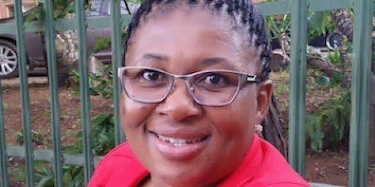

There is no mountain I can’t move and there is no greater feeling than knowing that I made it through a scary time, I have everything to be grateful for.
Back to Understanding Disability
Life After Losing My Leg, By Octavia Leisa (#SOS South Africa)

The question I am frequently asked is how I am coping after my amputation? and the only answer I can ever give is "I am coping well". I find myself constantly reminding them and myself that I am not disabled but I am a person living with a disability and I believe that in saying that, I am removing the power from the amputation and putting it back in its rightful place - with me. Calling myself disabled has never been a term that I warmed up to and it is not a term that I will warm up to.
It gives everything to the illness; your influence over the mind, body and soul, it changes your thinking and makes you feel like a responsibility and that you are unable to fend for yourself. However, the journey does make you weak, tired and needy and I would never wish this on any of my enemies. This journey was long, hard and painful.
Emotionally it is a road that impacts everyone around you, but my journey was mine and mine alone. The wheels were set in motion at the end of 2012 by a series of blood clots that were causing a lack of circulation in my left leg, that eventually led to gangrene. On the 12th of January 2013 at 4pm I was operated on and coming out of theatre without a leg was painful; I was physically a changed person but the one thing that kept me strong was my faith and the faith of those around me.
Praying and reading of the Bible became my source of solace and I stayed positive all the time. There is life after amputation and there are questions that you had never thought to ask like what is a phantom symptom, something that I can only describe as an individual experience connecting to a non-physical part of the body.
It is a world of sharp pain, spasms and itchiness all on the leg that was amputated, the part of my leg that is not there. To overcome this I got creative, creating a makeshift leg with a towel and massage it (the towel) until the pain subsides. This helps calm the stump down and eases the pain. I can still do all the things I did prior to the amputation and the little that I cannot do is fine. There is no mountain I can't move and there is no greater feeling than knowing that I made it through a scary time in my life. I have everything to be grateful for.